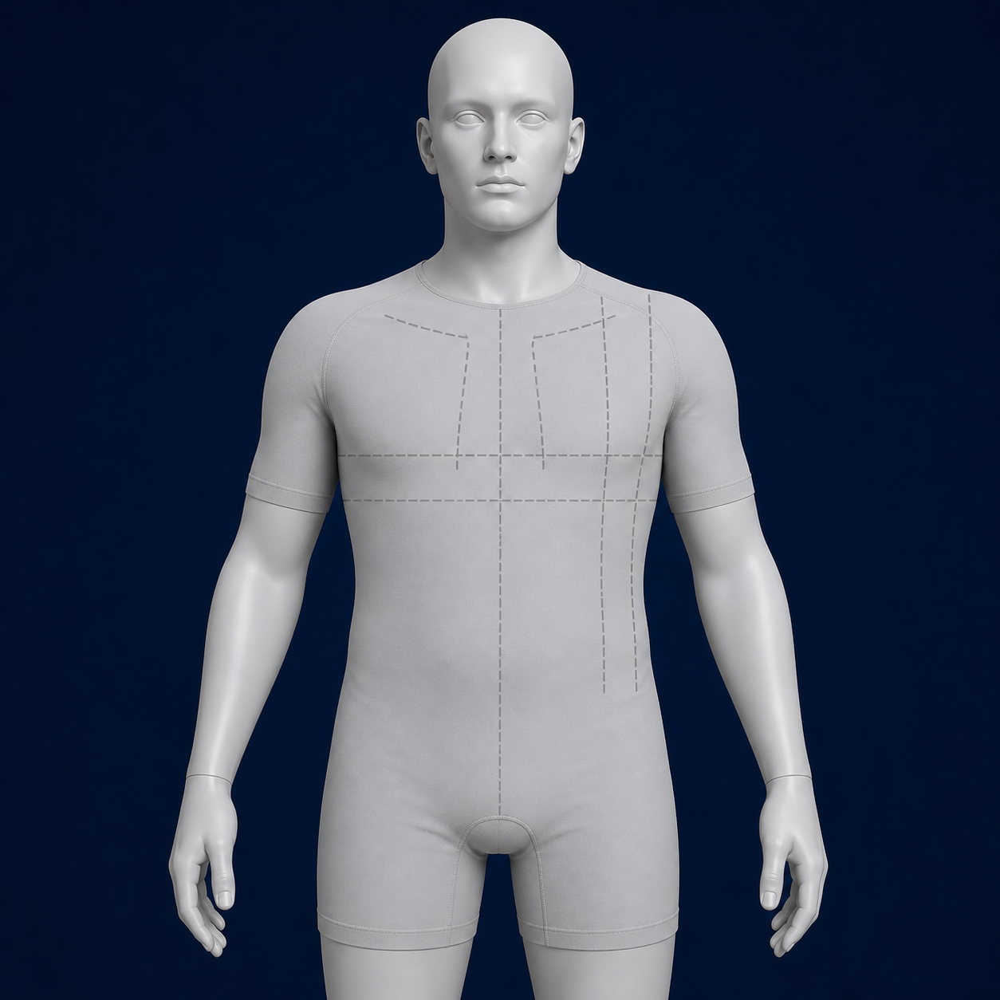
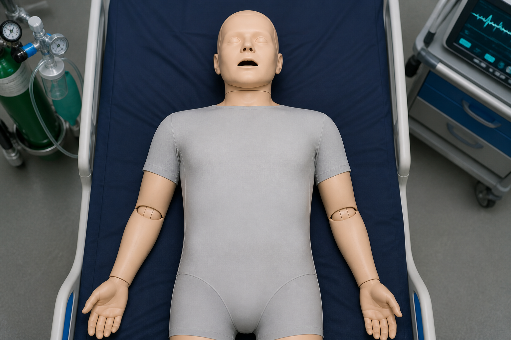
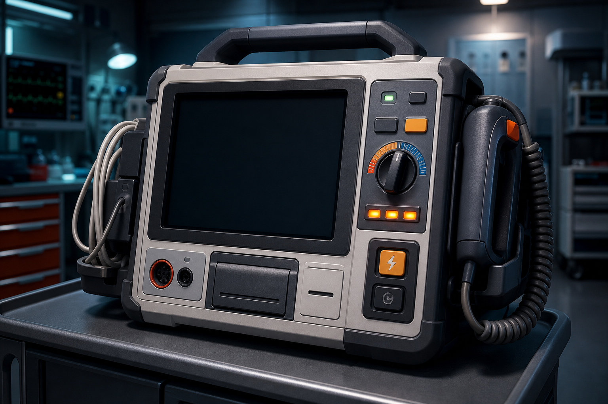

진단 비공개
리듬 감별 훈련
-- bpm
정상 리듬부터 심방세동, 심실빈맥, 완전 방실차단까지 실제 모니터처럼 움직이는 파형으로 학습합니다.
카드를 눌러 움직이는 파형과 판독 근거를 확인하세요. 먼저 정상 기준을 익힌 뒤 혼동 리듬을 비교합니다.
정답률과 확신도를 함께 봅니다. 낮은 항목은 취약 리듬 복습에서 우선 출제됩니다.
전극은 몸에 붙이는 센서이고, lead는 두 전위 사이 또는 심장을 바라보는 전기적 관점입니다. 자동 안내를 보거나 전극을 직접 눌러 위치와 관찰 영역을 연결해 보세요.

RA·LA·LL 전극으로 Einthoven 삼각형을 형성합니다.
Lead II는 우측 상지에서 좌측 하지 방향으로 심장의 하벽 방향 전기활동을 관찰합니다.
V1·V2: 제4늑간 흉골연 → V4: 제5늑간 쇄골중앙선 → V3: V2와 V4 사이 → V5·V6: V4와 같은 수평선.
환자 평가부터 패드 부착, 리듬 판독, 비동기 제세동 또는 동기화 심율동전환, 충격 후 행동까지 실제 순서로 수행하세요.

전극 패드를 점선 위치로 직접 끌어 놓으세요. 우측 상흉부와 좌측 외측 흉부의 전후 방향으로 전류가 통과하도록 배치합니다.

핵심 소견:
우선 간호:
매 세션 첫 2문제는 정상·동성리듬을 판독해 기준 파형을 활성화합니다.
AF↔조동, PAC↔PVC, Mobitz I↔II처럼 혼동쌍을 섞어 차이를 말합니다.
오답·낮은 확신 문항은 취약 복습 모드에서 더 자주 다시 나옵니다.